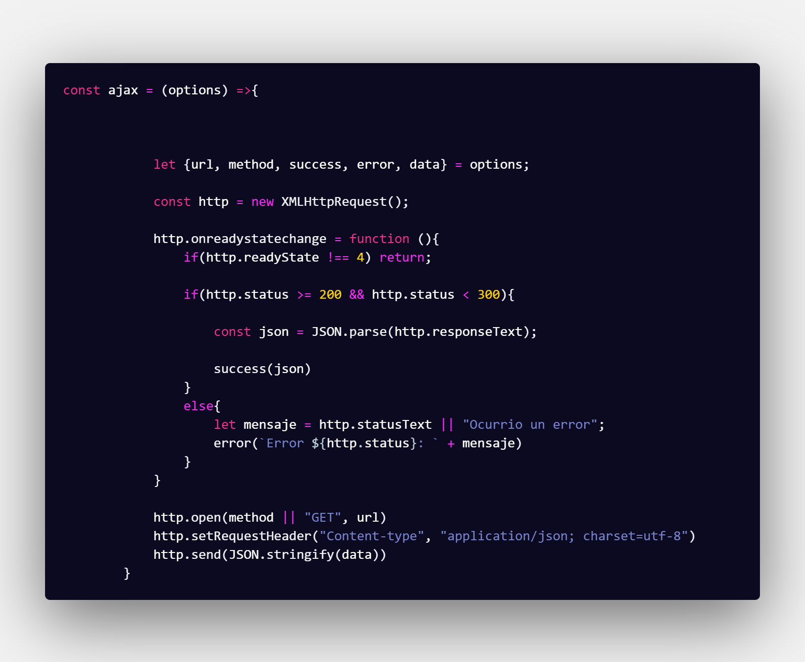

Para trabajar con AJAX, se puede muchas formas, por ejemplo con el Objeto XMLHttpRequest que es para la comunicacion asincrona, un ejemplo pueder ser el siguiente:
Por medio de esta funcion se trabaja con AJAX, se recibe un objeto y por medio de la desestructuracion se traen las variables y los metodos correspondientes, La url es de donde se quiere traer la informacion, El method es que tipo de peticion se realizara al servidor, pueden ser(GET, POST, PUT, DELETE) , las cuales son las acciones basicas de un CRUD(CREATE, READ, UPDATE, DELETE). Recibe un metodo success, el cual se encarga de manejar la informacion que sea enviada del servidor. Un metodo error, este se encargara de cuando haya un error en la peticion, y un objeto data, en este iran todos los datos que se quieran enviar ya sea para crear o actualizar datos.
Pero esta Web no se realizo asi, hay formas mas optimas para este tipo de casos, por ejemplo utilizando la API Fetch esta proporciona una Interfaz Javascript para acceder y manipular partes del canal HTTP, tales como peticiones y respuestas. Por otro lado provee un metodo llamado fetch(), este es un metodo global que mejora la facilidad y la logica de obtener recursos de forma asincrona por la red.